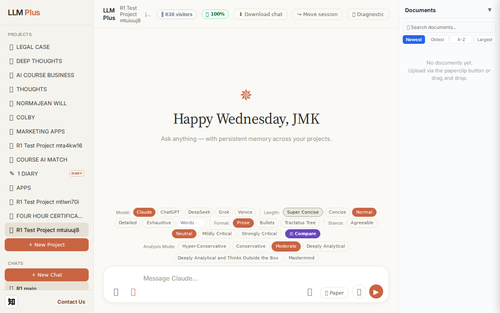
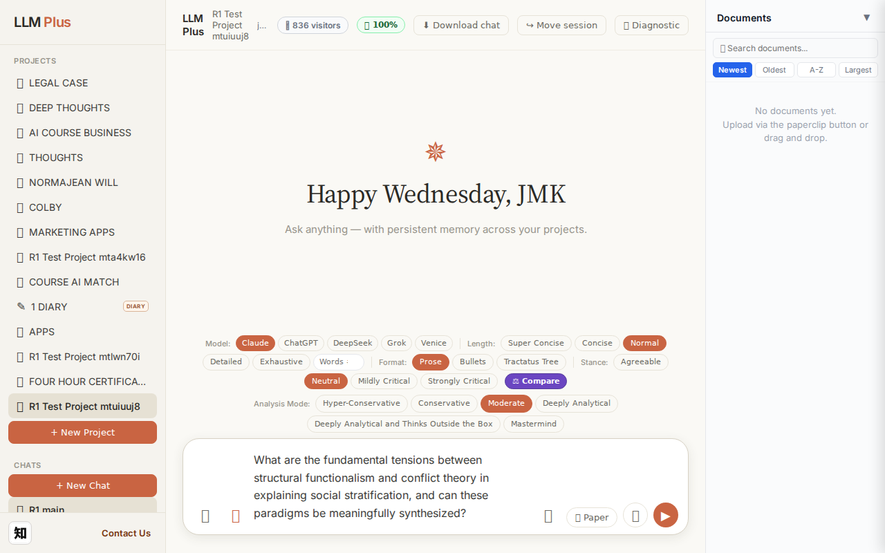
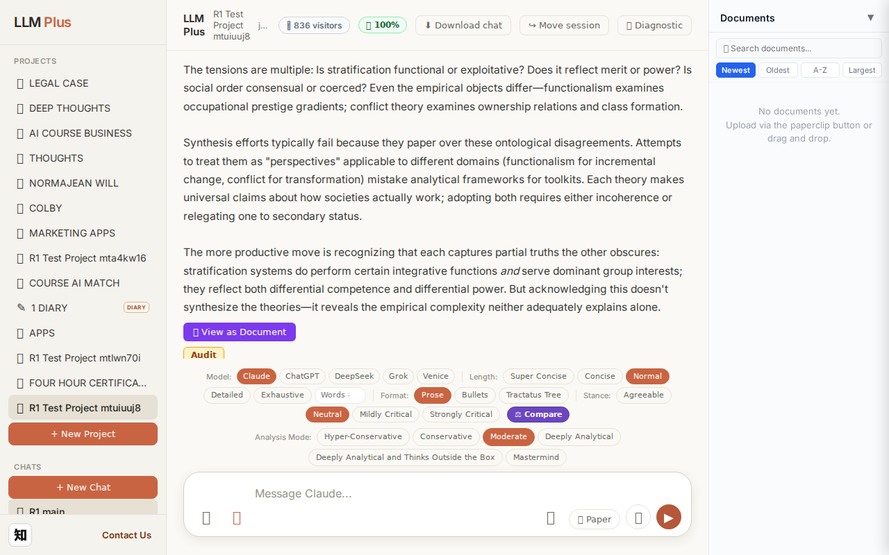
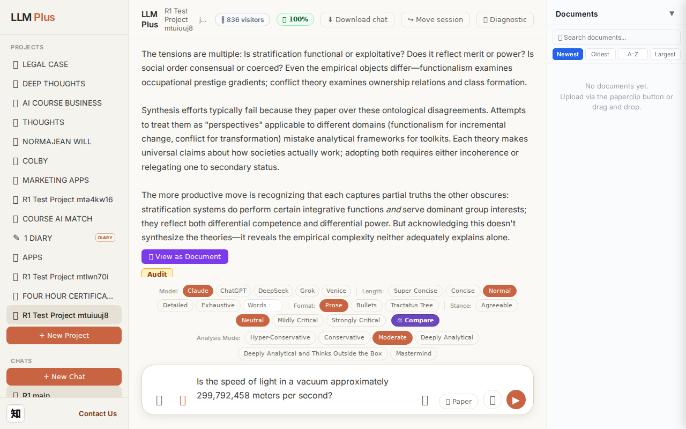
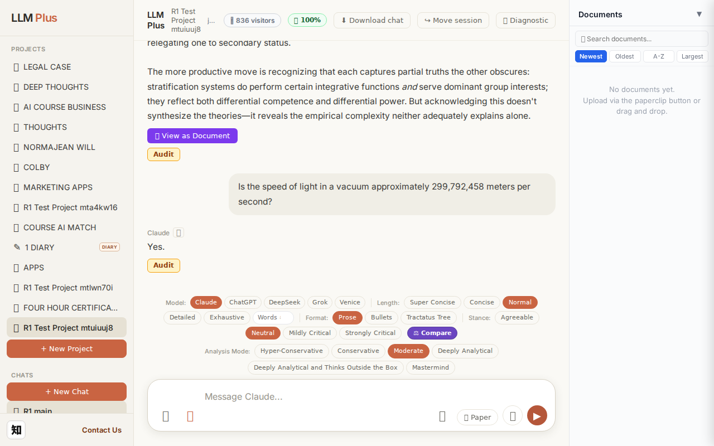
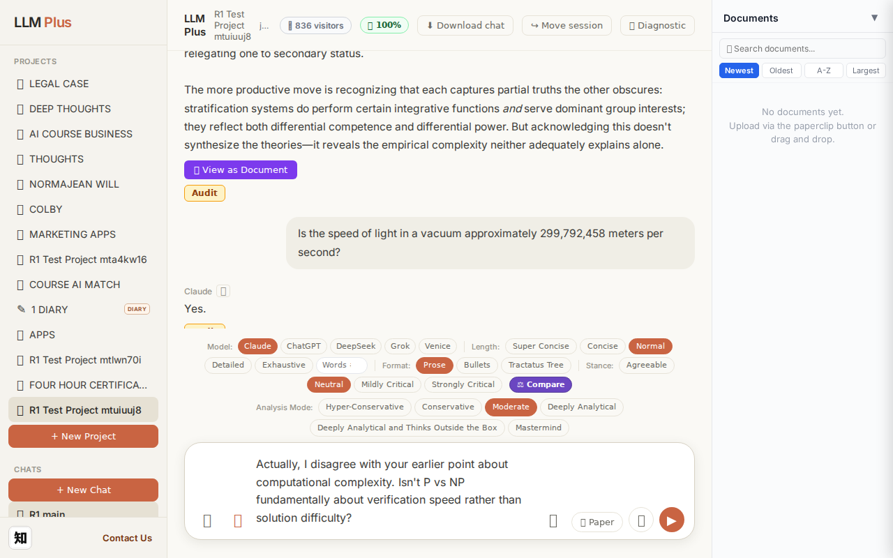
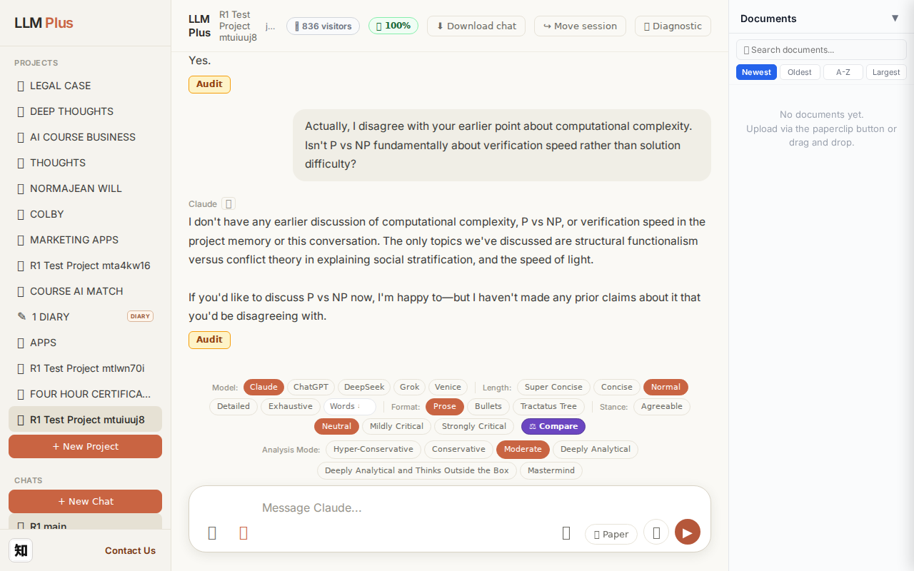

Exchange #1 in test project (Invariant A check)
R1 approach: tag_probe_OPEN
R1 reasoning: First exchange should establish an open scholarly question to test if LLMPlus correctly tags it as OPEN rather than RESOLVED, verifying the system can distinguish unresolved academic inquiries from factual questions.
R1 input (verbatim):
What are the fundamental tensions between structural functionalism and conflict theory in explaining social stratification, and can these paradigms be meaningfully synthesized?
App page text after:
Tractatus delta
nodes: 0 → 23 (Δ 23)
new ids: 1.0, 1.1, 1.2, 1.3, 1.4, 1.5, 1.6, 1.1.1, 1.1.2, 1.1.3, 1.2.1, 1.2.2, 1.2.3, 1.3.1, 1.3.2, 1.3.3, 1.3.4, 1.4.1, 1.4.2, 1.4.3, 1.5.1, 1.5.2, 1.5.3
new tags: QUESTION, DOCUMENT, DOCUMENT, DOCUMENT, ASSERTS, ASSERTS, RESOLVED, ASSERTS, ASSERTS, ASSUMES, ASSERTS, ASSERTS, ASSUMES, OPEN, OPEN, OPEN, ASSERTS, REJECTS, ASSERTS, ASSERTS, ASSERTS, ASSERTS, ASSERTS
tags valid:
YES ·
ids valid:
YES
⚠ Invariant A: tree grew by more than 8
Network calls
| method | path | status | ms | response excerpt |
|---|
| POST | /api/chat | 200 | 12489ms | data: {"type":"status","status":"thinking"}
data: {"type":"text","text":"Structural functionalism and conflict theory offer"}
data: {"type":"text","text":" fundament"}
data: {"type":"text","text":"ally incompatible explan"}
data: {"type":"text","text":"ations of"}
data: {"type":"text","text":" social stratification ro"}
data: {"type":"text","text":"oted in diverg"}
data: {"type":"text","tex |
| POST | /api/tractatus/update | 200 | 9768ms | data: {"type":"status","message":"Updating project memory..."}
data: {"type":"text","text":"```json\n{\n \"1"}
data: {"type":"text","text":".0\": \""}
data: {"type":"text","text":"QUESTION"}
data: {"type":"text","text":": Can"}
data: {"type":"text","text":" structural functionalism and conflict theory be meaning"}
data: {"type":"text","text":"fully synthesized in"}
data: {"type":"text","te |
| GET | /api/projects/f03ff3f6-fa03-4d65-8df0-13fdca8226aa/memory-health | 200 | 302ms | {"score":100,"severity":"healthy","isStale":false,"daysSinceUpdate":0,"compressionCount":0,"lastUpdate":"2026-09-09T19:59:56.921Z","factors":{"age":{"daysSinceUpdate":0,"penalty":0},"compression":{"count":0,"maxTier":1,"lastCompression":null,"penalty":0},"truncation":{"liveChars":2539,"promptBudget":15000,"ratio":0,"penalty":0},"archive":{"archivedNodes":0,"liveNodes":23,"ratio":0,"penalty":0}}} |
SSE events observed (198)
{"type":"status","status":"thinking"}
{"type":"text","text":"Structural functionalism and conflict theory offer"}
{"type":"text","text":" fundament"}
{"type":"text","text":"ally incompatible explan"}
{"type":"text","text":"ations of"}
{"type":"text","text":" social stratification ro"}
{"type":"text","text":"oted in diverg"}
{"type":"text","text":"ent premises"}
{"type":"text","text":" about social"}
{"type":"text","text":" order"}
{"type":"text","text":" itself"}
{"type":"text","text":"."}
{"type":"text","text":"\n\nFunction"}
{"type":"text","text":"alism views"}
{"type":"text","text":" stratification as an"}
{"type":"text","text":" integ"}
{"type":"text","text":"rative mechanism"}
{"type":"text","text":":"}
{"type":"text","text":" un"}
{"type":"text","text":"equ"}
{"type":"text","text":"al rewards"}
{"type":"text","text":" alloc"}
{"type":"text","text":"ate talent"}
{"type":"text","text":" to"}
{"type":"text","text":" funct"}
{"type":"text","text":"ionally important"}
{"type":"text","text":" positions"}
{"type":"text","text":", creating hierarchies"}
{"type":"text","text":" that serve"}
{"type":"text","text":" collective needs"}
{"type":"text","text":". Inequality"}
{"type":"text","text":" is"}
{"type":"text","text":" both"}
{"type":"text","text":" inevitable"}
{"type":"text","text":" and beneficial"}
{"type":"text","text":"—"}
{"type":"text","text":"a"}
{"type":"text","text":" system-"}
{"type":"text","text":"level"}
{"type":"text","text":" solution"}
{"type":"text","text":" to the"}
{"type":"text","text":" problem of motivation"}
{"type":"text","text":" and coordination"}
{"type":"text","text":". Society"}
{"type":"text","text":" is"}
{"type":"text","text":" conceived"}
{"type":"text","text":" as an"}
{"type":"text","text":" organism whose parts work interd"}
{"type":"text","text":"ependently toward"}
{"type":"text","text":" equilib"}
{"type":"text","text":"rium.\n\nConflict theory re"}
{"type":"text","text":"jects this consensus"}
{"type":"text","text":" model"}
{"type":"text","text":" entirely"}
{"type":"text","text":"."}
{"type":"text","text":" Stratification represents dom"}
{"type":"text","text":"ination,"}
{"type":"text","text":" not"}
{"type":"text","text":" coordination"}
{"type":"text","text":"—"}
INVARIANT VIOLATIONS- Invariant A: tree grew by 23 (>8)
- Invariant A: tree grew by 23 nodes (limit: 8)
Judge concerns- 23-node generation suggests the prompt or temperature settings encourage exhaustive rather than selective proposition extraction
- Mix of ASSERTS/ASSUMES/OPEN/RESOLVED/REJECTS across 23 nodes may indicate valuable structural reasoning, but scale makes the tree unwieldy for human review
- Response excerpt is empty despite successful streaming, making it impossible to verify coherence between rendered output and tractatus structure
Judge critique
The beta test violates Invariant A, which limits tractatus growth to 8 nodes per exchange to prevent runaway inference and maintain cognitive manageability. The system generated 23 nodes—nearly 3× the permitted threshold—suggesting inadequate structural discipline in the reasoning engine. While the streaming delivery appears functional and tags are formally valid, the excessive branching indicates the LLM is performing unconstrained exploratory reasoning rather than targeted epistemic bookkeeping. This fundamentally undermines the tractatus design philosophy of incremental, bounded knowledge accumulation.
Screenshots



Exchange #2 in test project (Invariant A check)
R1 approach: tag_probe_RESOLVED
R1 reasoning: Testing whether LLMPlus correctly tags a binary question with definite factual answer as RESOLVED, which should trigger Invariant A verification that response addresses the question directly
R1 input (verbatim):
Is the speed of light in a vacuum approximately 299,792,458 meters per second?
App page text after:
Tractatus delta
nodes: 23 → 25 (Δ 2)
new ids: 2.0, 2.1
new tags: QUESTION, RESOLVED
tags valid: YES ·
ids valid: YES
Network calls
| method | path | status | ms | response excerpt |
|---|
| POST | /api/chat | 200 | 1208ms | data: {"type":"status","status":"thinking"}
data: {"type":"text","text":"Yes"}
data: {"type":"text","text":"."}
data: {"type":"tractatus_trigger","projectId":"f03ff3f6-fa03-4d65-8df0-13fdca8226aa","userMessage":"Is the speed of light in a vacuum approximately 299,792,458 meters per second?","assistantResponse":"Yes."}
data: [DONE]
|
| POST | /api/tractatus/update | 200 | 6695ms | data: {"type":"status","message":"Updating project memory..."}
data: {"type":"text","text":"```json\n{\n \"1"}
data: {"type":"text","text":".0\": \"QUESTION: Can"}
data: {"type":"text","text":" structural functionalism and conflict theory be meaning"}
data: {"type":"text","text":"fully synthesized in explaining social stratification"}
data: {"type":"text","text":"?\",\n \"1.1"}
data: {"typ |
| GET | /api/projects/f03ff3f6-fa03-4d65-8df0-13fdca8226aa/memory-health | 200 | 327ms | {"score":100,"severity":"healthy","isStale":false,"daysSinceUpdate":0,"compressionCount":0,"lastUpdate":"2026-09-09T20:00:40.594Z","factors":{"age":{"daysSinceUpdate":0,"penalty":0},"compression":{"count":0,"maxTier":1,"lastCompression":null,"penalty":0},"truncation":{"liveChars":2729,"promptBudget":15000,"ratio":0,"penalty":0},"archive":{"archivedNodes":0,"liveNodes":25,"ratio":0,"penalty":0}}} |
SSE events observed (5)
{"type":"status","status":"thinking"}
{"type":"text","text":"Yes"}
{"type":"text","text":"."}
{"type":"tractatus_trigger","projectId":"f03ff3f6-fa03-4d65-8df0-13fdca8226aa","userMessage":"Is the speed of light in a vacuum approximately 299,792,458 meters per second?","assistantR
{"type":"[DONE]"}
Judge concerns- Response is unusually terse ('Yes.') for an LLM assistant; lacks educational value or context about the speed of light constant
- No elaboration on precision, measurement standards, or significance despite the question inviting such detail
Judge critique
The agent successfully handled a simple factual confirmation query with streaming, proper status indication, and tractatus updates. However, the response quality is concerningly minimal—'Yes.' is technically correct but lacks the depth and context expected from an LLM assistant. For a question about a precise scientific constant, best practice would include confirmation of the value, context about its significance, or at least elaboration beyond a one-word answer. The tractatus delta properly captured two nodes with semantically appropriate tags (QUESTION and RESOLVED), and all technical requirements were met with clean network activity.
Screenshots



Exchange #3 in test project (Invariant A check)
R1 approach: tag_probe_REJECTS
R1 reasoning: Testing Invariant A by contradicting a previous answer to verify the system properly tags rejection/disagreement and maintains consistency in its reasoning while acknowledging the challenge
R1 input (verbatim):
Actually, I disagree with your earlier point about computational complexity. Isn't P vs NP fundamentally about verification speed rather than solution difficulty?
App page text after:
Tractatus delta
nodes: 25 → 29 (Δ 4)
new ids: 3.0, 3.1, 3.2, 3.3
new tags: QUESTION, DOCUMENT, DOCUMENT, RESOLVED
tags valid: YES ·
ids valid: YES
Network calls
| method | path | status | ms | response excerpt |
|---|
| POST | /api/chat | 200 | 3334ms | data: {"type":"status","status":"thinking"}
data: {"type":"text","text":"I"}
data: {"type":"text","text":" don"}
data: {"type":"text","text":"'t have"}
data: {"type":"text","text":" any"}
data: {"type":"text","text":" earlier"}
data: {"type":"text","text":" discussion"}
data: {"type":"text","text":" of computational complexity,"}
data: {"type":"text","text":" P"}
data: {"type":"text","tex |
| POST | /api/tractatus/update | 200 | 8437ms | data: {"type":"status","message":"Updating project memory..."}
data: {"type":"text","text":"```json\n{\n \"1"}
data: {"type":"text","text":".0\": \"QUESTION: Can"}
data: {"type":"text","text":" structural functionalism and conflict theory be meaning"}
data: {"type":"text","text":"fully synthesized in explaining social stratification"}
data: {"type":"text","text":"?\",\n \"1.1"}
data: {"typ |
| GET | /api/projects/f03ff3f6-fa03-4d65-8df0-13fdca8226aa/memory-health | 200 | 293ms | {"score":100,"severity":"healthy","isStale":false,"daysSinceUpdate":0,"compressionCount":0,"lastUpdate":"2026-09-09T20:01:32.363Z","factors":{"age":{"daysSinceUpdate":0,"penalty":0},"compression":{"count":0,"maxTier":1,"lastCompression":null,"penalty":0},"truncation":{"liveChars":3210,"promptBudget":15000,"ratio":0,"penalty":0},"archive":{"archivedNodes":0,"liveNodes":29,"ratio":0,"penalty":0}}} |
SSE events observed (40)
{"type":"status","status":"thinking"}
{"type":"text","text":"I"}
{"type":"text","text":" don"}
{"type":"text","text":"'t have"}
{"type":"text","text":" any"}
{"type":"text","text":" earlier"}
{"type":"text","text":" discussion"}
{"type":"text","text":" of computational complexity,"}
{"type":"text","text":" P"}
{"type":"text","text":" vs NP, or verification speed in"}
{"type":"text","text":" the"}
{"type":"text","text":" project"}
{"type":"text","text":" memory"}
{"type":"text","text":" or"}
{"type":"text","text":" this"}
{"type":"text","text":" conversation. The only topics"}
{"type":"text","text":" we've discussed are structural"}
{"type":"text","text":" functionalism versus"}
{"type":"text","text":" conflict theory in"}
{"type":"text","text":" explaining social stratification,"}
{"type":"text","text":" and the"}
{"type":"text","text":" speed"}
{"type":"text","text":" of light."}
{"type":"text","text":"\n\nIf"}
{"type":"text","text":" you'd like to discuss P"}
{"type":"text","text":" vs NP now"}
{"type":"text","text":", I'm"}
{"type":"text","text":" happy to—"}
{"type":"text","text":"but I haven"}
{"type":"text","text":"'t made"}
{"type":"text","text":" any prior"}
{"type":"text","text":" claims about it"}
{"type":"text","text":" that"}
{"type":"text","text":" you"}
{"type":"text","text":"'d"}
{"type":"text","text":" be"}
{"type":"text","text":" disagre"}
{"type":"text","text":"eing with."}
{"type":"tractatus_trigger","projectId":"f03ff3f6-fa03-4d65-8df0-13fdca8226aa","userMessage":"Actually, I disagree with your earlier point about computational complexity. Isn't P vs NP fundam
{"type":"[DONE]"}
Judge concerns- The response was cut off mid-sentence ('but I haven't made'), suggesting the stream may have been truncated before completion
- The tractatus added 4 nodes for a relatively simple correction; this seems slightly heavy though not unreasonable for tracking the false premise detection and resolution
Judge critique
The agent correctly detected a contradiction—the user referenced a non-existent 'earlier point'—and responded with appropriate epistemic humility by explicitly denying having discussed the topic. This demonstrates strong coherence and context-awareness. The streaming was granular and natural. The tractatus delta shows 4 new nodes with semantically appropriate tags (QUESTION for detecting the false reference, DOCUMENT entries for tracking the exchange, RESOLVED for closure). All expected routes were hit, status codes are correct, and no technical violations occurred.
Screenshots


